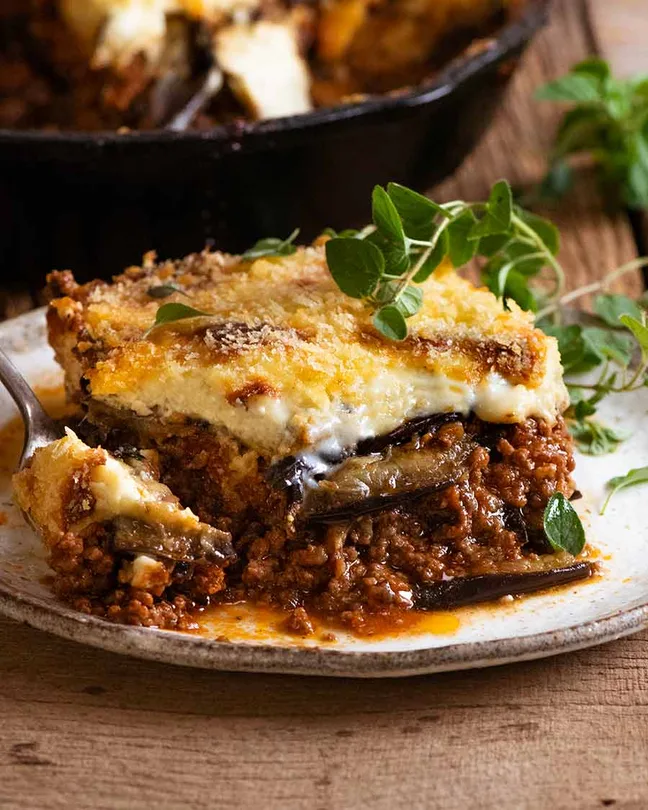

Moussaka
Home

The tastiest moussaka recipe
Moussaka is to the Greek what Lasagna is to Italians. A rich tomato meat sauce layered with eggplant instead of pasta sheets, and topped with a thick layer of bechamel sauce, this traditional Greek recipe takes time to assemble but it is well worth the effort!
Ingredients
- Eggplant
- Meat
- Sauce
- Potato
Steps
- Cooking the eggplant
- The meat sauce, a rich Bolognese type sauce made with lamb or beef but with traditional Greek flavours of oregano and cinnamon
- thick bechamel sauce thicker than used in Lasagna and things like Broccoli Gratin, it is semi-set using eggs
- Layering it all up, lasagna style